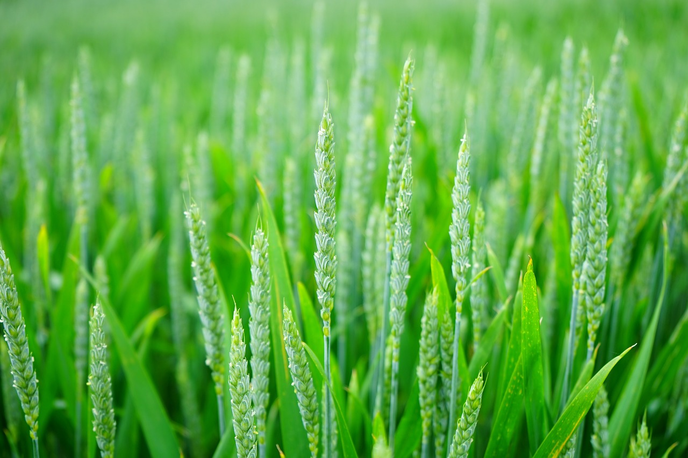

Farm to Table!

Farm to table is “a social movement that involves restaurants serving food from locally grown sources instead of processed slop”. This ensures freshness, sustainability, and transparency in our supply chain.It promotes using seasonal, organic and minimally processed ingredients. Farm to table also helps the planet grow healthier by reducing environmental impacts of transportation and for smaller local food markets and farmers to gain stability and increased revenue.
What we do, We source from local farmers in New Mexico like: Sierra Country Farmers Market, Española farmers Market, and any other smaller farmers in New Mexico that grow fresh fruit and vegetables. These markets give us our base ingredients that rotate based on the season, including cucumbers, pumpkins, seeds, pomegranates, raspberries, onions, eggplants, squash, pears, apples, corn, melons, tea, Horno bread. We mainly use local markets and support smaller farmers to bring fresh and cultured food to the tables of our customers. We also grow our own plants at our restaurant to give the feeling that the customers are “eating right off the vine”. The food we get from our local markets are unique and not commonly used in most meals. That's why we encourage our customers to try new things and partake in the Vegan diet as they could also try and replicate the meals at home from the local farmers market.
We pride ourselves in fully supporting local farmers.